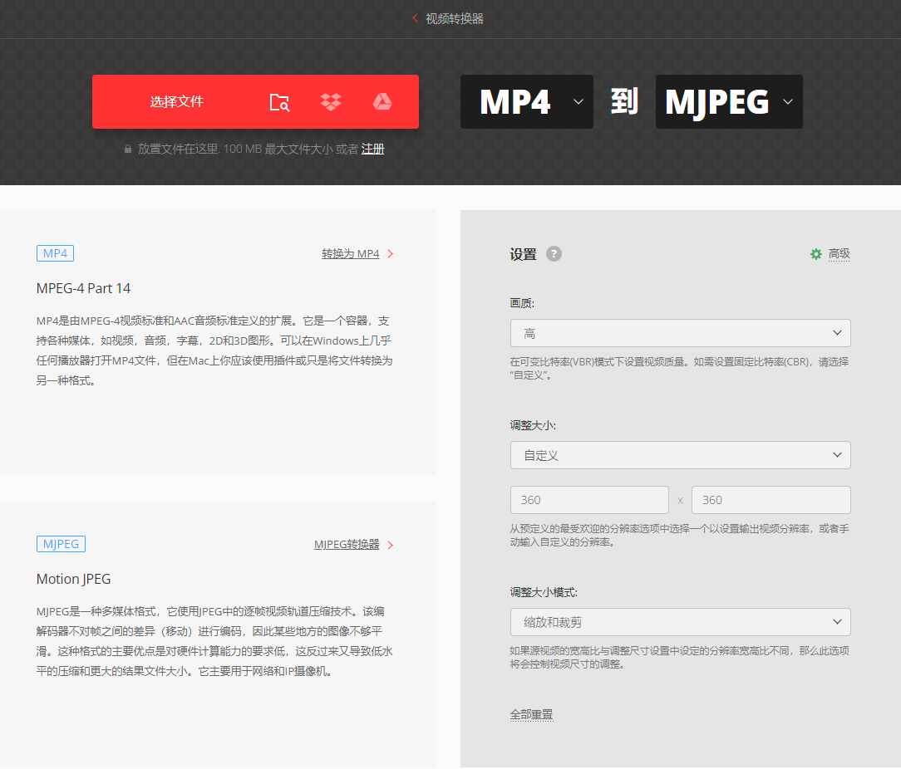

了解 SpeedIM 为赛车迷与F1粉丝带来的独特功能使用方式
1从设备底部菜单指示条,向上滑动弹出菜单选项,进入设置菜单
2二维码自动弹出
3用微信扫描，打开 ApexRacing 小程序
4小程序首页,点击“前往网络配置”按照提示完成操作
1从设备底部菜单指示条,向上滑动弹出菜单选项,进入设置菜单
2设置手机连接到 WiFi：SPEEDIM_XXXX
3手机浏览器打开 192.168.4.1
4输入 WiFi 名称与密码，点击连接
进入菜单中的功能后,再次向上滑出菜单,会出现红色IGN点火开关,长按3秒后,开始连接服务器并进行实时数据更新。
首次为NO SIGNAL状态,与服务器进行首次连接后系统会缓存上一次排名数据。
每次退出当前功能,如需实时数据遥测,需要再次长按IGN点火开关启动实时数据更新。
ConvertIo文件转换器进行视频格式转换, 存储位置: sd卡/"视频"文件夹。具体转换参数配置如下图:
